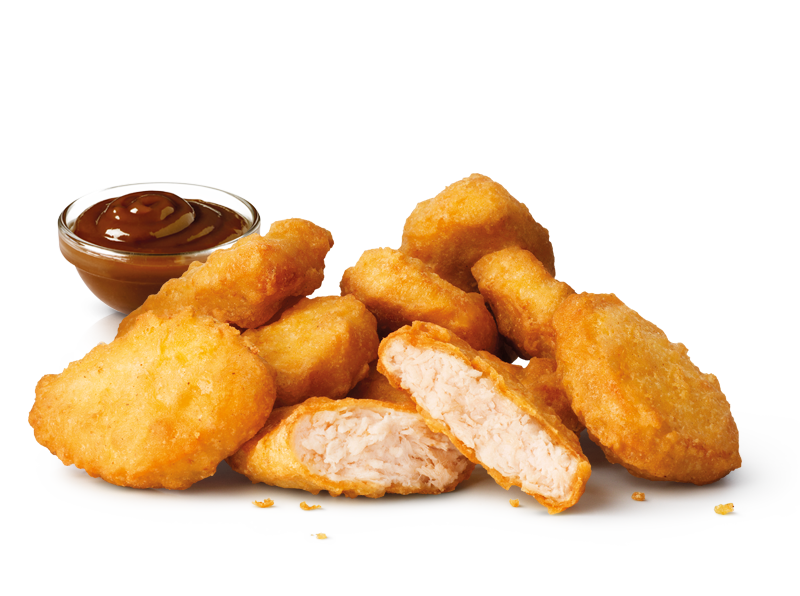
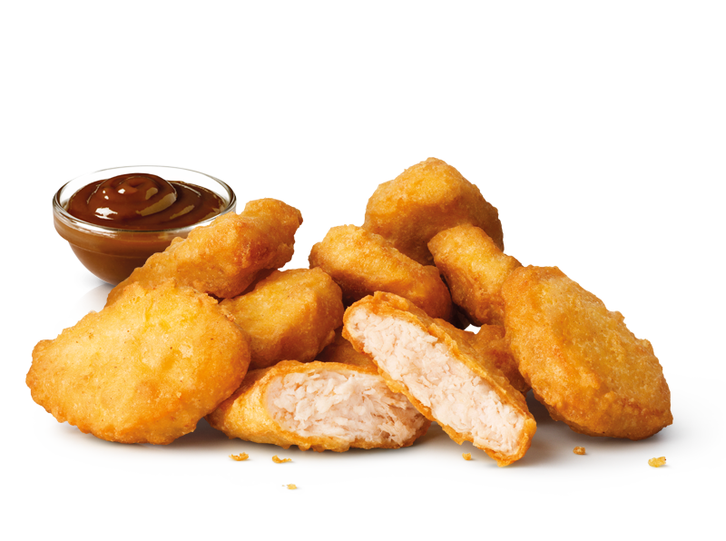
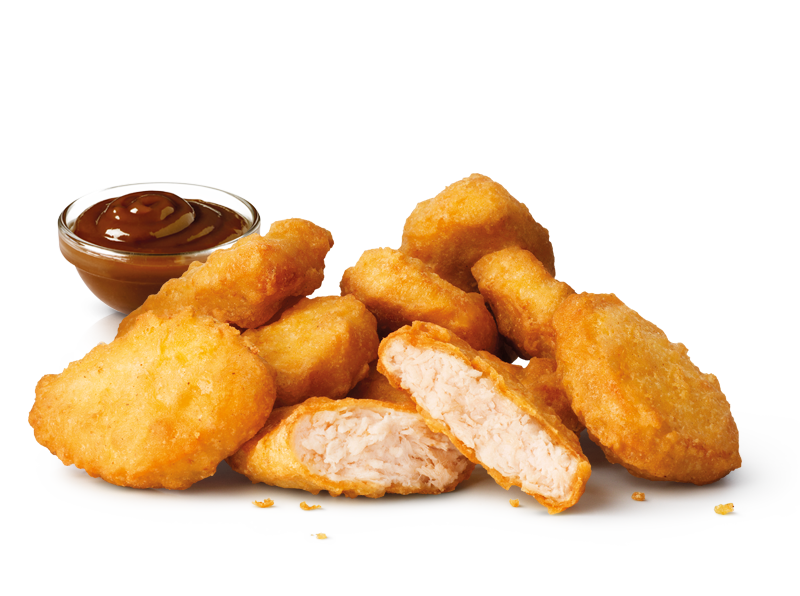

Qui dove e' nato il calcio ha deciso di raccontarci una storia indimenticabile, la storia del Leicester City Football Club di Claudio Ranieri campione d'Inghilterra per la prima volta in 132 anni di storia. La piu' grande sorpresa della storia del calcio inglese ,probabilmente, dal 1978 ad oggi quando il Nottingham Forest del leggendario Brian Clough vinse il campionato da neopromossa. Una storia incredibile quella del Leicester, quella di Ranieri che vince per la prima volta un campionato di massima divisione dopo 30 anni di carriera da allenatore. La storia del Leicester City Football Club, ci credevano in pochi, solo dei pazzi, 5000 contro 1 questa era la quota, la quota dell'impossibile.
Tutto ebbe inizio nell'estate del 2015 quando durante la tournee estiva il figlio dell'allenatore Nigel Pearson, David, venne coinvolto in uno scandalo sessuale che comporto' il suo allontanamento dalla squadra e le successive dimissioni del padre Nigel. La societa' nomina nuovo allenatore Claudio Ranieri con l'incarico di raggiungere una salvezza tranquilla per la stagione 2015-2016, ma la sua accoglienza e 'alquanto scettica per via della fallimentare esperienza con la nazionale greca. Il campionato delle foxes inizia con la vittoria per 4-2 della formazione allenata da Ranieri ai danni del Sunderland e dopo 5 giornate si trova, insieme alle solite Arsenal, Manchester United e Manchester City e alle sorprendenti Swansea City e Crystal Palace nelle zone alte della classifica. Tra ottobre e novembre pero' il City frena e Arsenal e Manchester United lo superano ma vennero poi scalzate dal Leicester City che inanello' una serie di risultati positivi, tra cui il 2-1 al Chelsea campione in carica firmato Vardy e Mahrez che costa la panchina a Jose' Mourinho. Il Leicester si ritrova in testa alla classifica e il fatto che le inseguitrici si rubino punti a vicenda non fa altro che favorirne la fuga. Verso meta' stagione l'Arsenal ebbe un calo fisico e rimase solo l'emergente Tottenham a inseguire il Leicester (il Manchester City venne messo fuori dai giochi con la vittoria per 3-1 in trasferta da parte delle foxes con la doppietta di Huth e il gol di Mahrez) che, nonostante i soli 5 punti di svantaggio sulle foxes, non riesce ad agganciare per via del fatto che la formazione di Ranieri non si ferma piu'. La partita decisiva per la vittoria del titolo da parte del Leicester con alcune giornate d'anticipo fu in casa del Machester United (reduce da un'altra stagione deludente), ma bisognava fare i conti con l'assenza di Jamie Vardy (squalificato 3 giornate dopo il rosso rimediato con il West Ham). In vantaggio andarono gli uomini di Van Gaal con Martial che sfrutto' un buco difensivo lasciato da Simpson, il pareggio del Leicester arrivo' con la punizione battuta in mezzo da Drinkwater che venne insaccata dal colpo di testa di Morgan. Con questo pareggio era necessario attendere l'esito di Chelsea-Tottenham, per la vittoria del titolo era necessario che il Tottenham non vincesse, ma dopo la fine del primo tempo gli Spurs sono avanti per 2-0. Al 56' Cahill riapre tutto e a pochi minuti dalla fine Hazard, dopo un uno-due con Diego Costa batte Lloris con un destro a giro e fa esplodere la festa dei giocatori del Leicester a casa di Vardy. Il risultato finale per 2-2 fa diventare realta' una favola, quella del Leicester City che per la prima volta guarda tutta l'Inghilterra dall'alto. Nel giorno della consegna del trofeo, in occasione di Leicester-Everton (terminata 3-1), Bocelli nel pre-partita canta "Nessun dorma" davanti ad uno stadio tutto esaurito.

Se vuoi vedere la classifica finale clicca "Mostra", altrimenti clicca su "Nascondi"
La data e l'ora in questo momento sono(aggiornare ogni volta):
 
